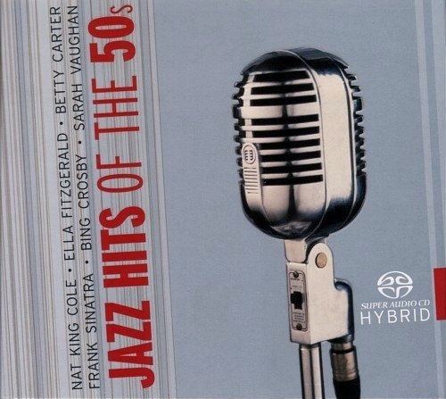

SACD
Jazz Hits Of The 50s
Various
Media: NM · Sleeve: NM
CA$50.00
Sold
Discogs SuggestedCA$88.80
Discogs MedianCA$88.80
Discogs HighCA$88.80
- Physical Copy ID
- BB-SACD-206
- Year
- 2005
- Label
- Documents
- Catalog #
- 224069-311
- Country
- DEGermany
- Genre / Style
- Jazz, Funk / Soul · Vocal